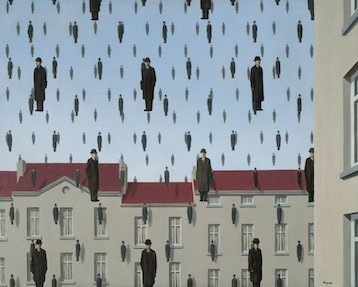

Golconda
René Magritte · 1953 · Oil on canvas · 80 × 100 cm · The Menil Collection, Houston
In copyright. Look and learn: shown for study, not for download.
The title was found by Magritte's friend the poet Louis Scutenaire, as it often was; Golconda is a ruined city near Hyderabad in India, once the centre of a diamond trade. Scutenaire's own face is on the large man beside the chimney of the house on the right. The painting is said to have started from photographs of soldiers parachuting in the First World War. Magritte was fifty-four when he painted it in 1953.